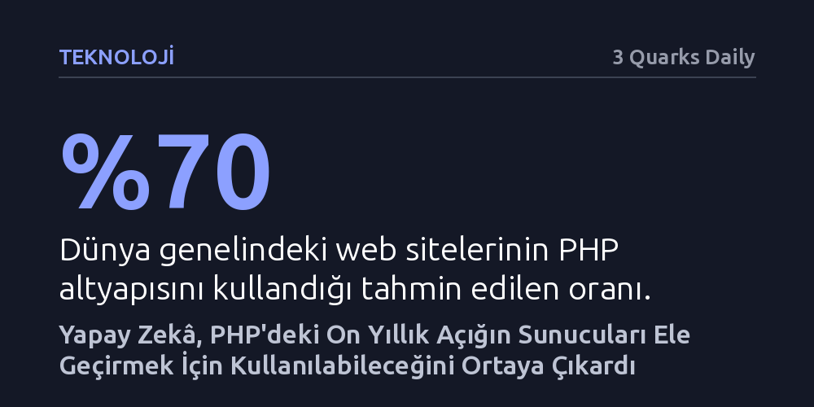

TEKNOLOJI · 3 Quarks Daily · 2026-10-27
Yapay zekâ araçları, web sitelerinin yüzde 70'ine güç veren PHP'de on yıldır gizlenen bir açığın sunucuları tamamen ele geçirebileceğini ortaya çıkardı. Bu keşif, küresel ölçekte acil bir yamalama telaşı ile istismar saldırıları yarışını tetikledi.
Yapay zekânın sadece yazılım geliştirmekle kalmayıp, insan uzmanların yıllarca gözden kaçırdığı veya zararsız sandığı kritik güvenlik zafiyetlerini silaha dönüştürme potansiyelini gözler önüne seriyor.

İnternetin görünmeyen omurgası, çoğu zaman kullanıcıların farkında bile olmadığı açık kaynaklı yazılım bileşenleri üzerinde yükseliyor. Bu bileşenlerin en yaygınlarından biri olan ve dünya genelindeki web sitelerinin yaklaşık yüzde 70'ine altyapı sağlayan programlama dili PHP'de, son derece kritik bir güvenlik açığı tespit edildi. Söz konusu zafiyet, kötü niyetli aktörlerin hedef sunucularda uzaktan diledikleri programları ve komutları çalıştırmalarına olanak tanıyor. Bu durum, saldırganların savunmasız sunucuları bütünüyle kontrol altına alabilmesi ve barındırılan tüm verilere diledikleri gibi müdahale edebilmesi anlamına geliyor.
Keşfin duyurulması, dijital dünyada adeta zamana karşı bir yarış başlattı. Bir tarafta güvenlik uzmanları ve sistem yöneticileri açığı kapatacak yamaları devreye almak için hummalı bir çalışma yürütürken, diğer tarafta siber saldırganlar henüz güncellenmemiş sistemleri istismar ederek kazanç ve avantaj sağlama telaşına düştü. Web ekosisteminin devasa bir bölümünü doğrudan ilgilendiren bu tehdit, küresel internet altyapısının merkezi kırılganlıklarını yeniden gündeme taşıdı.
Krizin en dikkat çekici yönü, güvenlik açığının aslında yeni bir kod hatası olmaması. Söz konusu zafiyet, on yılı aşkın süredir PHP'nin kaynak kodları arasında fark edilmeden varlığını koruyordu. Dahası, araştırmacılar bu hatayı 2020 yılında fark etmiş ancak yaptıkları değerlendirmede büyük bir yanılgıya düşmüşlerdi. O dönemde hatanın yalnızca yazılımın çökmesine yol açabilecek sıradan bir arıza olduğu varsayılmış, bu nedenle sistemin bütününe yönelik bir tehdit oluşturmadığı düşünülmüştü.
Tarihi yanılgıyı bozan gelişme, Wiz ve Calif adlı iki siber güvenlik kuruluşunun devreye girmesiyle yaşandı. Google bünyesindeki Wiz ile önde gelen yapay zekâ laboratuvarlarıyla çalışan butik güvenlik şirketi Calif, PHP kodlarını birbirinden bağımsız olarak gelişmiş yapay zekâ araçlarıyla teste tabi tuttu. Yapay zekâ modelleri, insan uzmanların yıllarca göz ardı ettiği bu hatanın aslında hedef makineyi bütünüyle ele geçirmek üzere silaha dönüştürülebileceğini kanıtladı. Uzmanlar, insan araştırmacılardan oluşan bir ekibin bu bağlantıyı tek başına kurmasının aylar sürebileceğini, hatta hiçbir zaman bulunamayabileceğini vurguluyor.
Bu olay, yapay zekâ araçlarının yazılım güvenliğindeki rolünün köklü biçimde değiştiğini belgeliyor. Yapay zekâ artık yalnızca kod tamamlama veya yüzeysel denetimler yapmıyor; insan zihninin gözden kaçırdığı derin mantık hatalarını ve karmaşık istismar senaryolarını dakikalar içinde simüle edebiliyor. On yıldır göz önünde duran bir zafiyetin ancak gelişmiş algoritmaların analiziyle tam tehlikesinin anlaşılması, siber savunmada yapay zekânın vazgeçilmez bir zorunluluk haline geldiğini gösteriyor.
Öte yandan madalyonun diğer yüzü, savunma ve saldırı arasındaki asimetriyi daha da derinleştiriyor. Güvenlik açığını bulan teknoloji sistemleri korumak için kullanılırken, aynı kapasitenin kötü niyetli aktörlerin elinde benzer açıkları hızla istismar kodlarına dönüştürmek amacıyla kullanılması kaçınılmaz hale geliyor. PHP vakası, geleceğin siber savaşlarının insan uzmanların sezgileri ile otonom algoritmaların analitik gücünün bileşiminde kazanılıp kaybedileceğini açıkça kanıtlıyor.